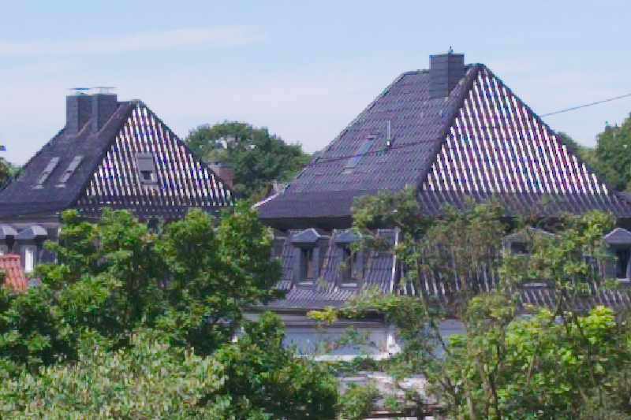
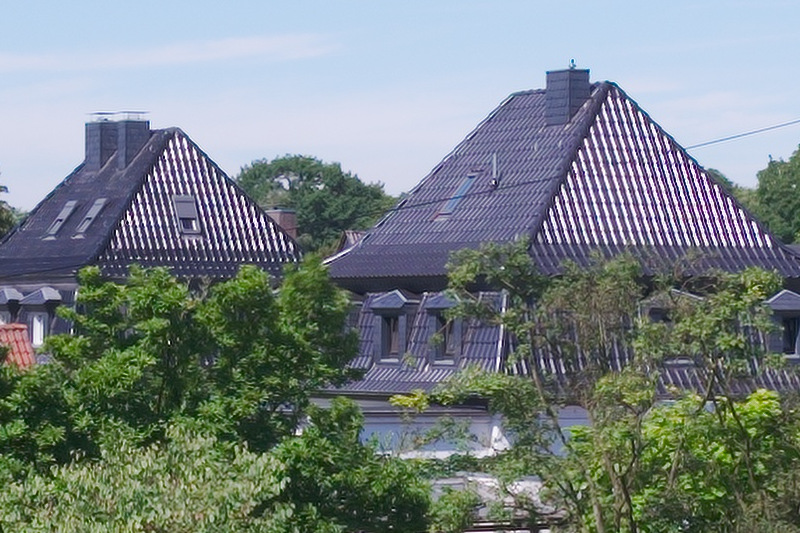
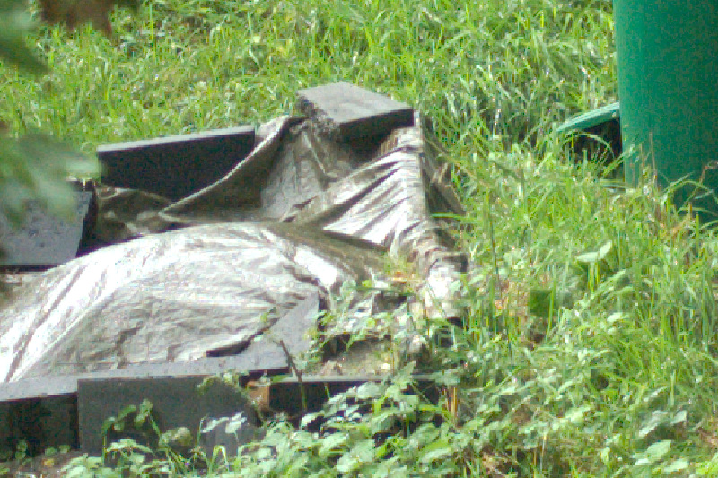
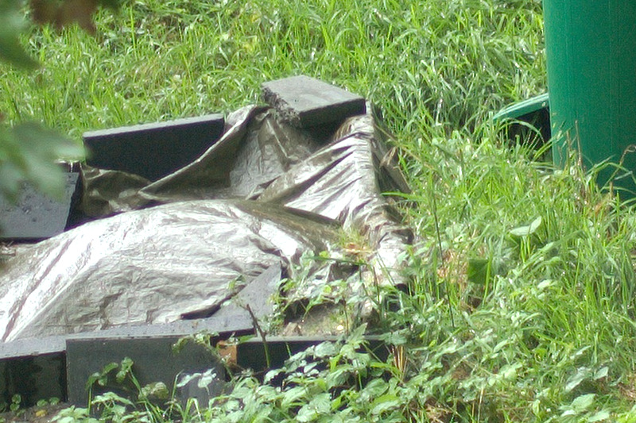

News
| Date | News |
|---|---|
| 20 Apr 2017 | Released Version 0.3 |
| 13 Nov 2016 | Released Version 0.2 |
| 06 Nov 2016 | Released Version 0.1 |
Introduction
VerySharp is a program that uses a series of photographs to calculate a higher resolution image with enhanced detail rendition. It stands in analogy to the principle of the pixel shift feature offered by some modern digital cameras: Those cameras capture multiple images with a subpixel-level sensor shift and then use that data to calculate an image whose resolution exceeds the sensor's physical resolution. For example, the Olympus E-M5 II, featuring a 16 megapixel sensor, is able to create a 40 megapixel image using pixel shift.
The goal of VerySharp is to provide a way to create high resolution images with cameras that don't feature pixel shift capabilities. VerySharp calculates a high resolution image from a series of handheld-shot photos by exploiting the fact that the little shakes that occur between the shots lead to shifts on a subpixel level, which can be used to enhance image detail and remove moire. In this regard, the fact that a photographer's hands aren't as stable as a tripod finally got a silver lining ;) On this way the program is able to obtain an image of approximately twice the resolution of the input images.
The processing pipeline of the program is quite simple:
- All images are upscaled using Lanczos interpolation.
- The images are aligned to each other.
- The images are averaged.
- The resulting image is sharpened using Richardson-Lucy deconvolution.
Samples
A set of two samples is given below. On the bottom a 100% crop of an image processed from six hand-held photos is shown, and on the top there is a crop from one of the hand-held photos that was upscaled to the size of the processed image. The first image has been shot using a Fujifilm X-T10 and the second one using a Nikon D40. Both photos were developed using Darktable.
  Note that the moire artifacts on the roof disappear!
 
How to install VerySharp
There are two ways to obtain VerySharp:
- Download a pre-packaged binary for Windows, which may be the easiest way for Windows users. Download the latest release using the "Download latest release" button on top of this page, extract the archive and execute VerySharp.exe. Note: If you encounter an error stating "Entry Point Not Found" when trying to run VerySharp, most likely you need to install recent windows updates on your computer.
- Download the sourcecode and execute VerySharp using python3 by executing "python main.py" from the command shell in the source code directory. You can obtain the latest source code using the "Download source .zip" button on top of this page. Alternatively, you may clone your own copy of the git repository by running the command "git clone https://github.com/wilecoyote2015/VerySharp.git". VerySharp depends on PyQT5, NumPy and OpenCV for Python. On Windows, Numpy and OpenCV can be installed using this guide, and here you find help on installing PyQt5. If you are using Mac, installing OpenCV can be a bit tricky, unfortunately. OpenCV has to be compiled from source in order to use it with Pyton 3. This is a guide for doing so. PyQT5 can be installed using the command "brew install pyqt5" (without quotes) if you have brew installed, which should be the case if you have followed the guide to install OpenCV.
How to use VerySharp
Please note that VerySharp is still in an early phase of development. It may run unstable or produce unexpected results. You can help improving VerySharp by reporting issues here after you have made sure that you issue has not already been reported by someone else. For running VerySharp, a minimum RAM size of 6 GB is recommended.
- Shooting photos: Capture a series of six images of your subject with identical exposure. Do NOT use a tripod because VerySharp calculates the extended image information based on little shifts between the individual images. Hold the camera as steadily as possible. For now, processing will only work properly for static subjects. Use RAW format.
- Preprocessing the Images: Use your favorite RAW converter and process the Images to taste. Use identical settings for all images so that they look the same. It is important to turn off sharpening. Turn on lens corrections like vignetting, CA and distortion correction.
- Using VerySharp: Start VerySharp and select the preprocessed images using the Select Images button. Define the output file using the Set Output button by navigating to the desired output directory in the appearing dialog and entering the desired filename without the file extension. Start processing using the Process button. The process will take some time.
- Have fun!
Support VerySharp
I am developing VerySharp during my free time with the hope that it is useful for you and that you have fun with it. If you like VerySharp and would like to say thank you, there are two ways to support me:
- If you are based in Germany or USA, you can place your next Amazon order by using the following links: AmazonDE AmazonUS. It will not cost you anything more, and amazon will give me a small fraction of the price. So this is a win-win situation ;) Usually my share from an order corresponds to the price of a hot chocolate. And isn't a hot chocolate a great way to say thank you?
- Especially, but not only, if you are a user of Fujifilm cameras, you may take a look at my Shapeways Shop, where some of my 3D-Printed camera accessories are offered.
Thank you very, very much!